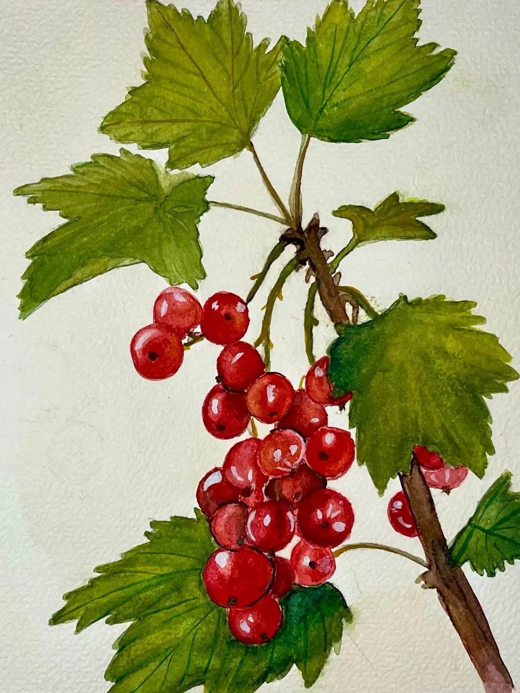
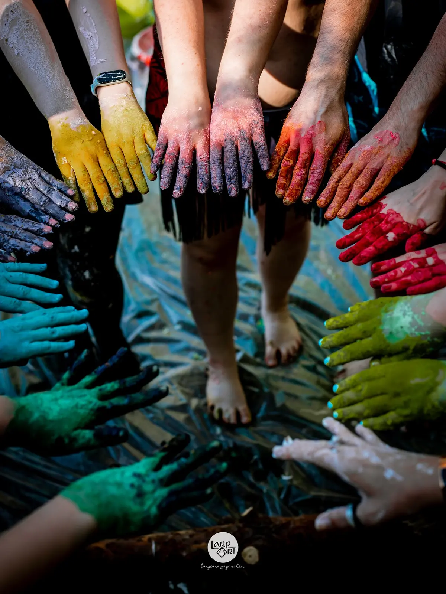
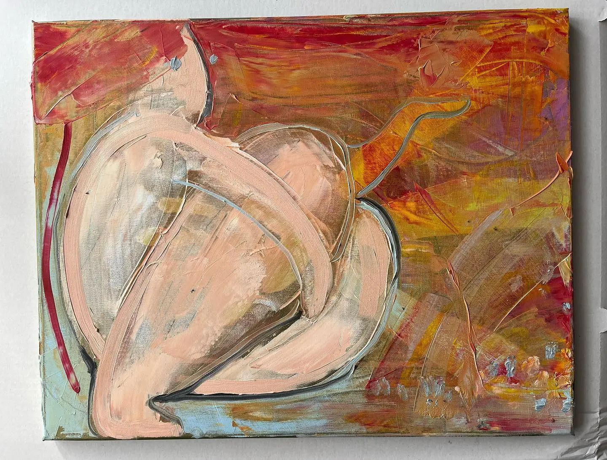
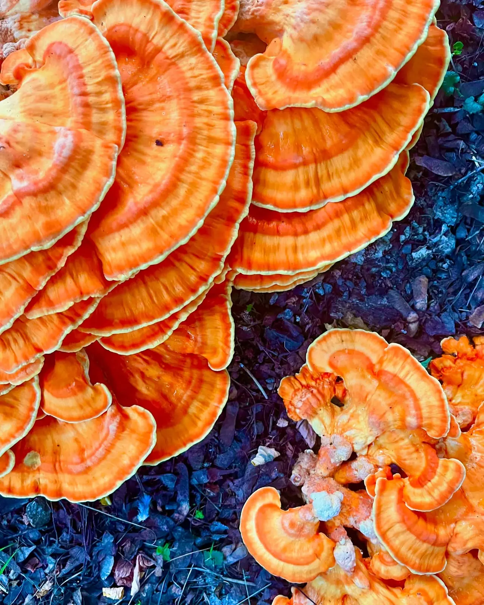
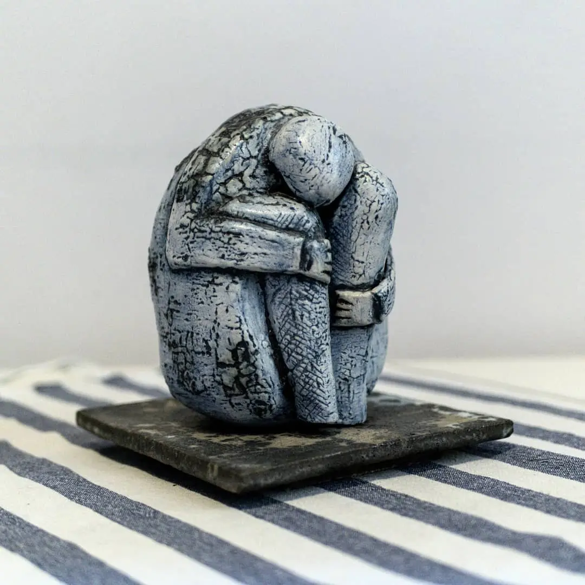
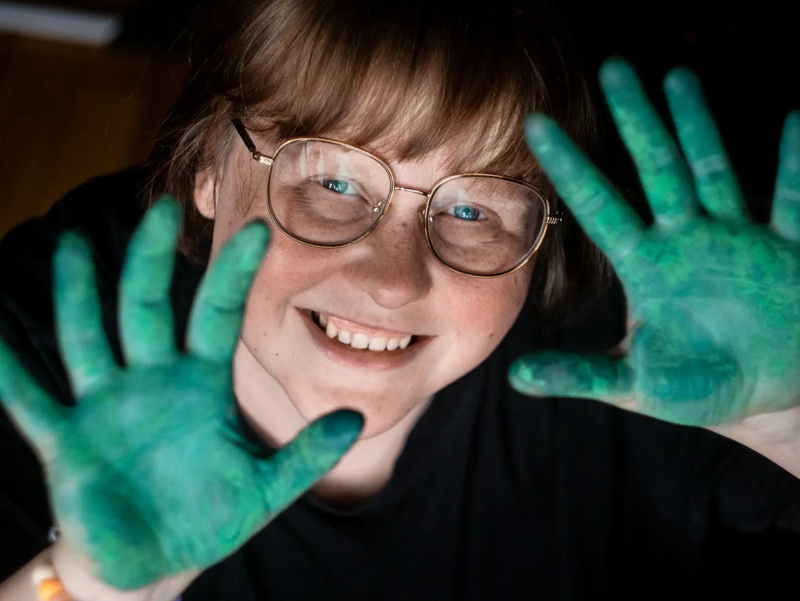

Agata Czacharska · artystka
Lubię moment, kiedy jeszcze nie wiadomo, co powstanie
Tworzę, eksperymentując z kolorem, fakturą i formą. Wybierz pracę, żeby zobaczyć ją z bliska.




Podejście
Najciekawsze dzieje się po drodze
Szczególnie bliski jest mi moment, w którym z pozornego chaosu zaczyna wyłaniać się coś nowego. Lubię zmieniać kierunek, zestawiać techniki i pozwalać pracy rozwijać się bez presji idealnego efektu.
Twórczość traktuję jako sposób wyrażania siebie i prowadzenia wewnętrznego dialogu. Każda praca jest zapisem decyzji, prób, przypadków i odkryć.

Agata Czacharska
artystka · edukatorka · absolwentka ASP we Wrocławiu
Jestem artystką z wykształceniem rzeźbiarskim. Pracuję z technikami płaskimi i przestrzennymi. Szukam własnego języka pomiędzy kolorem, materiałem i intuicją.
Gotowa praca jest dla mnie ważna, ale to droga do niej daje mi najwięcej energii.
Tworzenie razem
Prowadzę też warsztaty
Na zamówienie przygotowuję twórcze spotkania dla dzieci, dorosłych i grup. Daję przestrzeń do eksperymentowania i działania bez oceniania.
Zapytaj o warsztat
01 · warsztaty
Proces twórczy

02 · warsztaty
Swoboda działania

03 · warsztaty
Praca z fakturą

04 · warsztaty
Eksperymentowanie
Wpadła Ci w oko któraś z prac?